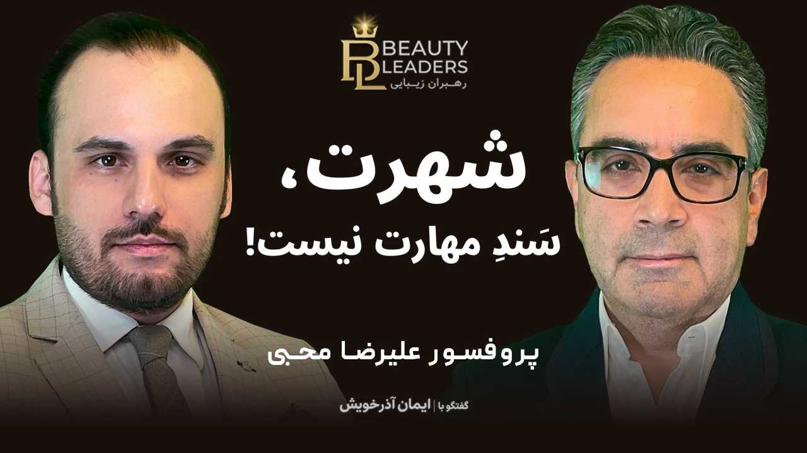
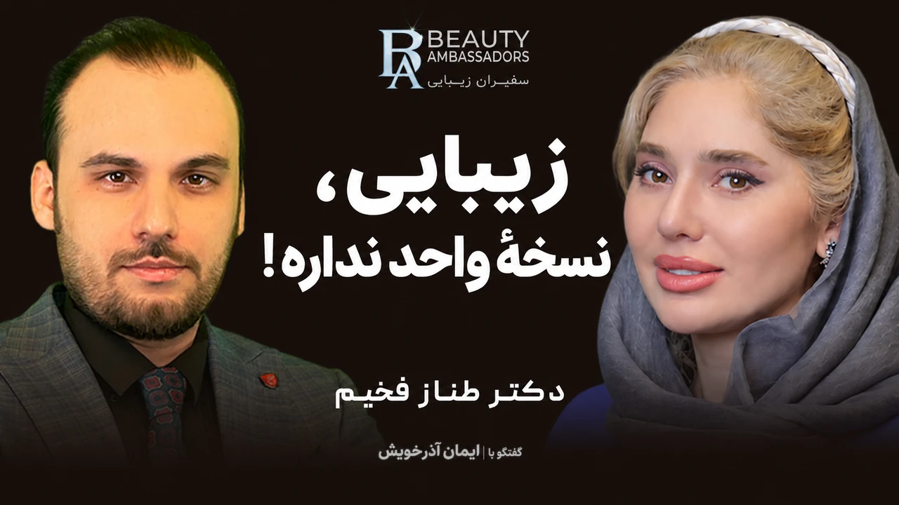
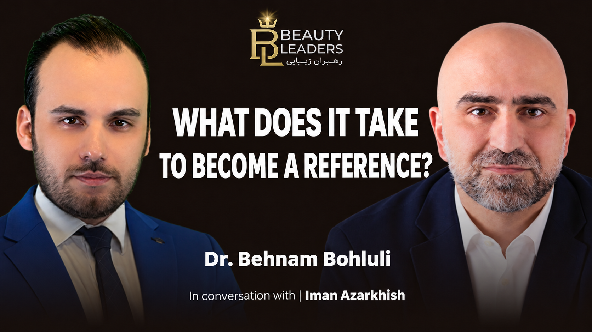

Beauty Leaders ·
How to distinguish surgical expertise from social-media fame
Professor at Iran University of Medical Sciences; ENT and head-and-neck surgeon with rhinology fellowship training
THE CONVERSATION ARCHIVE
29 published conversations featuring physicians and specialists across Beauty Leaders and Beauty Ambassadors. Each introduction presents the guest and the editorial significance of the episode, with full videos on YouTube.

Beauty Leaders ·
Professor at Iran University of Medical Sciences; ENT and head-and-neck surgeon with rhinology fellowship training

Beauty Leaders ·
Oral and maxillofacial surgeon and co-founder of iFACE Academy

Beauty Leaders ·
Professor Fahimeh Abdollahimajd
Full Professor of Dermatology, Shahid Beheshti University of Medical Sciences; Dermatology Department Chair, Shohada-e Tajrish Hospital

Beauty Leaders ·
Full Professor of Oral and Maxillofacial Surgery; Adjunct Professor, Gulf Medical University, UAE

Beauty Leaders ·
ENT and head-and-neck surgeon; professor at Tehran University of Medical Sciences

Beauty Leaders ·
ENT and head-and-neck surgeon; assistant professor at Tehran University of Medical Sciences

Beauty Ambassadors ·
Aesthetic physician and international aesthetics trainer


Beauty Leaders ·
Oral and maxillofacial surgeon with academic experience at the University of Toronto

Beauty Leaders ·
Dermatologist and professor at Tehran University of Medical Sciences
No conversations found.
This archive draws on 29 public entries in the channel owner’s official video export. Cover artworks are provisional and may be updated independently for Persian and English. Professional descriptions are based on the published programme introductions; independently corroborated sources are linked only where specifically available.